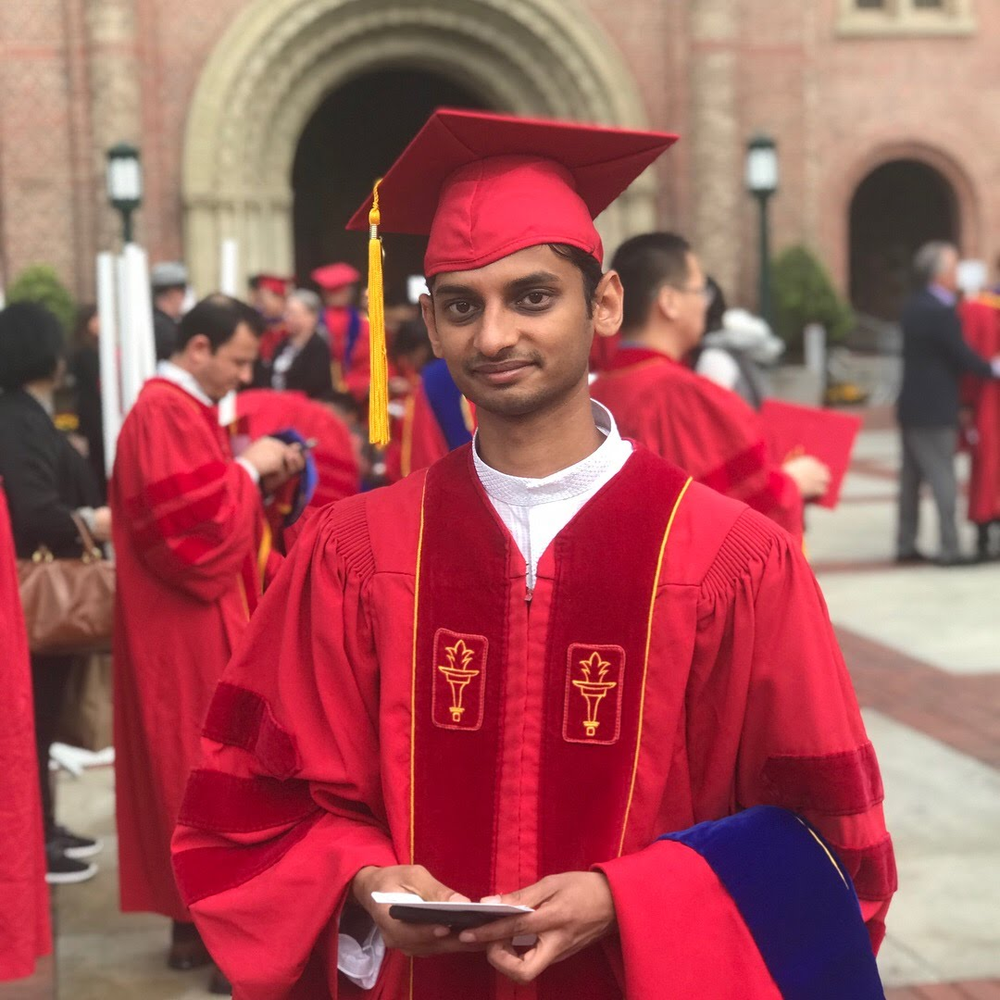

I am a Post Doctoral Research Associate in the Department of Electrical Engineering, University of Southern California under the advisement of Dr Viktor Prasanna. My current research focus is on developing deterministic and stochastic optimization algorithms and their approximations for net load balancing in smart grids with high PV penetration. I received my PhD in Computer Engineering from the University of Southern California in August 2018.
Approximation Algorithms, Combinatorial Optimization, Distributed Energy Resources (DER) Scheduling in Smart Grids, Cyber Physical Security in Smart Grids